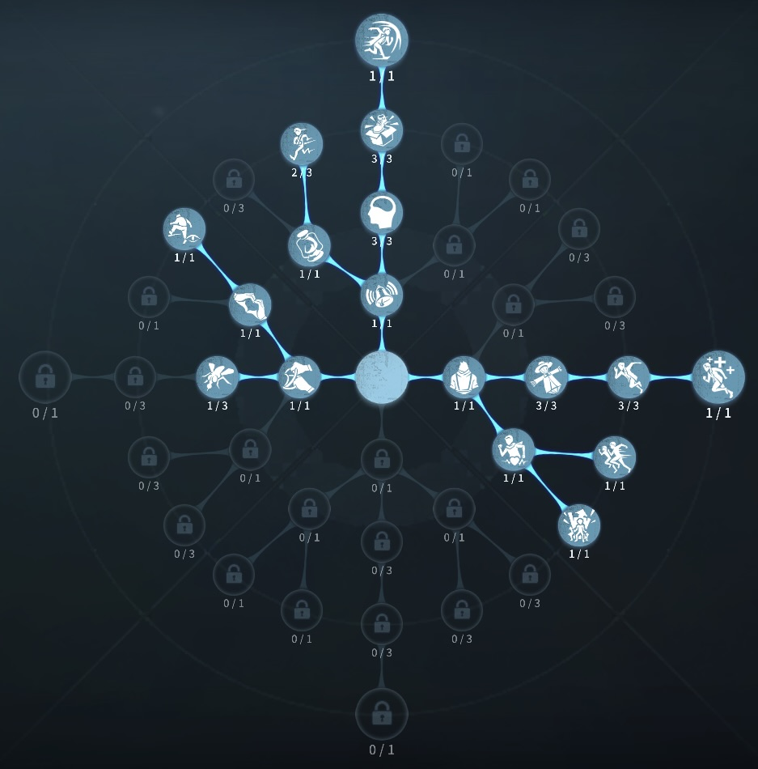
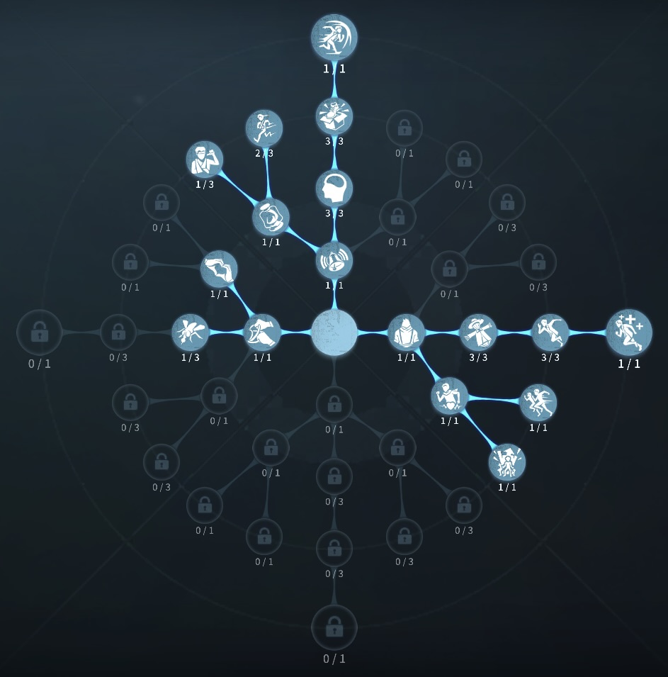

骨董商の評価
簫でハンターをフルボッコ！
外在特質と特徴
特質1:蔵鋒
・骨董商は簫を持っており5種類の技を使うことができる。回転式（毎秒1％）
使用中移動速度5％上昇
雲門（20％）
前方に6mジャンプし、低い障害物を乗り越えれる。
左遷式、右遷式、点刺（17％）
6ｍ以内のハンターをそれぞれ左、右、前にノックバックさせ、1.5秒間移動速度15％低下。
・ノックバックしたハンターが障害物にあたると、1秒間気絶し5秒間通常攻撃ができなくなる。ハンターに命中した後1秒以内もう一度命中させると5秒から7秒間通常攻撃ができなくなる。
・付近12.7m以内に1/2/3人のサバイバーがいるとき、攻撃不能時間が2/1/1秒になる。
・ハンターの生成物、飛び道具を破壊できる。
特質2:身軽
・足跡の持続時間1秒減少特質3:憎しみ
・付近18m以内のハンターが通常攻撃を行うたび板倒し速度が5％上昇、ハンターのスタン回復速度5％低下。最大2回まで重ね掛けできる。特質4:古傷
・ゲートの開門速度30％低下。特徴
粘着最強サバイバー大体のどのハンターにも対応が可能
基本的な立ち回り方
1. 追われた時
惜しみなく簫を使おう！
移動中は回転式で移動しよう！
左遷式、右遷式、点刺を使って攻撃できない時間を作ろう！
窓乗り越えなど通常が間に合いそうな場合は雲門で切り抜けよう！
2. 追われない時
状況を見て粘着にいこう！
風船救助で最も注意することがある。
ハンターが風船持ち上げモーション中は簫を使っても当たらないので注意！
おすすめの内在人格
フライホイール粘着型人格
この内在人格は、感覚順応で粘着を強化し、尻に火と防衛反応でチェイスを特化した人格

フライホイール治療型人格
この内在人格は、癒合で治療を強化し、尻に火と防衛反応でチェイスを強化する人格


みんなのコメント